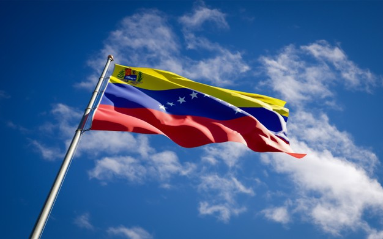
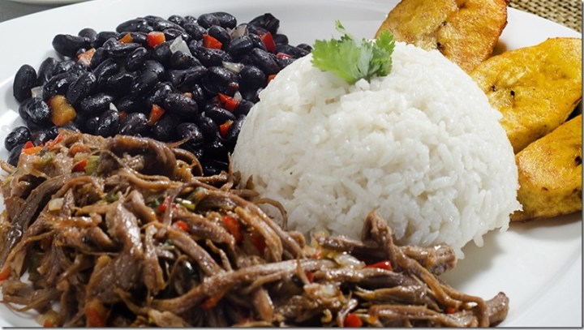
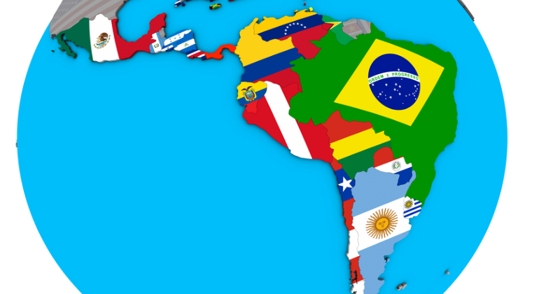

La pisca andina es una sopa o caldo de preparación sencilla, hecho a base de cilantro, cebollín, agua, papas cortadas en trozos, huevo y leche. La pisca andina es representativa y nativa de los Andes venezolanos y es comúnmente consumida durante el desayuno. Es típicamente acompañada con arepas de maíz.
La papa, producto por excelencia de la región andina, es ingrediente distintivo de la preparación.
Ingredientes:
- 4 papas
- 4 tazas de caldo de pollo
- 1/2 lt. de leche
- 2 cdas. de aceite
- 2 huevos
- 2 ramas de cebollín (cebollas de verdeo)
- 1 ramita de cilantro
- Sal
Preparación:
- Hervir el caldo y agregar las papas, el aceite y la cebolla de verdeo sin picar.
- Cuando estén blandas las papas, añadir los huevos cuidando que no se rompa la yema, cocinamos 5 minutos más o hasta que los huevos estén cocidos.
- Añadimos la leche y el cilantro picadito, y esperamos que hierva, cocinamos por 3 minutos más y retiramos del fuego.
Ubicación:

Turismo Venezolano
Venezuela ofrece cuatro regiones de incomparable belleza. Ven a conocerlas.
Recorre Venezuela

Gastronomía Venezolana
La gastronomía venezolana, riquísima en ingredientes y llena de mezclas.
Sabores Venezolanos
Turismo Latinoamericano
Latinoamérica nos ofrece un sin fín de destinos únicos. Conocé los más visitados.
Viaja por Latam

Gastronomía Latina
Cada región, ciudad o pueblo tiene una historia para contar arriba de su mesa.
Sabor Latino